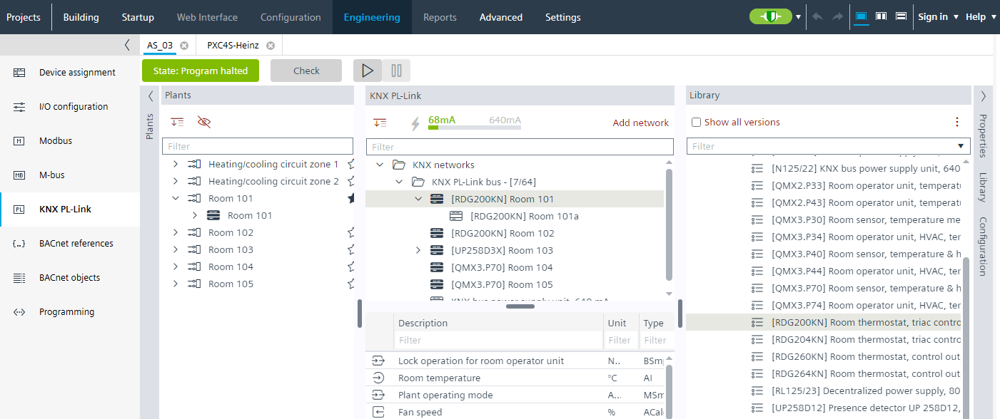

Adding a QMX device
- A PXC4/5/7 device must be configured.
- KNX PL-Link devices can only be configured in offline mode.
- Go to Building > Building structure.
- Right-click a configured PXC4/5/ and select Go to engineering.
- Open the KNX PL-Link task.
- In the KNX PL-Link area, click Add network. Info: Depending on the used device, up to 5 networks for Modbus, M-bus, KNX PL-Link are supported.
- Select the Library view on the right. See KNX PL-Link devices.
- From the Field devices > KNX PL-Link folder, drag a room operator unit from the library to the KNX PL-Link bus network.
- The KNX PL-Link device is added.
